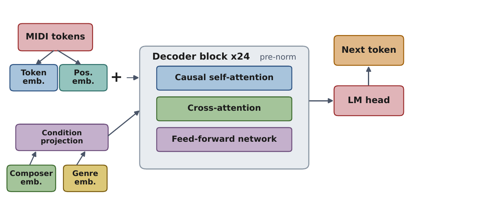

Evaluating Tokenization Strategies for Expressive Classical Piano Performance Generation
A systematic evaluation of six symbolic representations that add velocity, beat annotations, and sustain pedal to a note-only representation.
The model is a decoder-only Transformer with 24 layers. Composer and genre embeddings condition each layer through cross-attention. Training uses MAESTRO pretraining followed by ASAP fine-tuning.
Paper Code Hugging Face models
Generated example: Bach Prelude, Note + Velocity + Pedal
